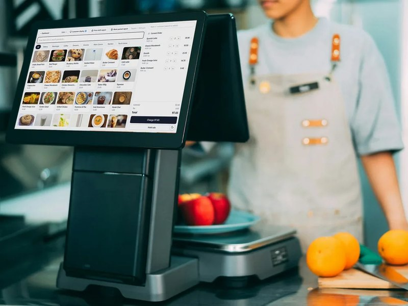
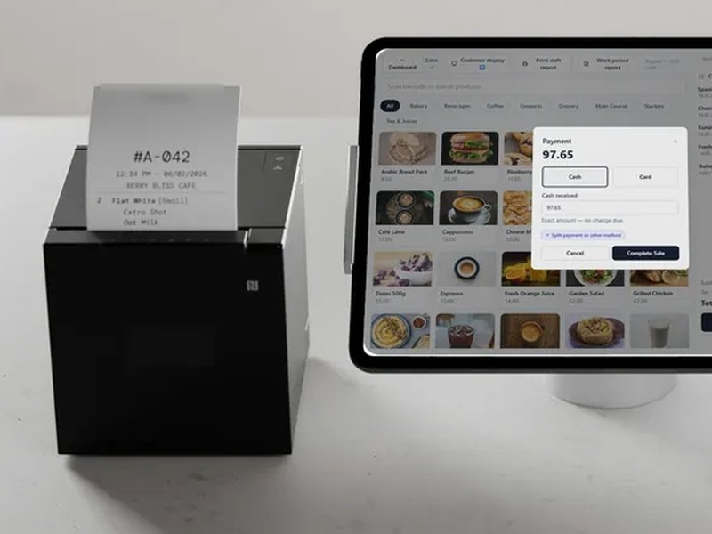
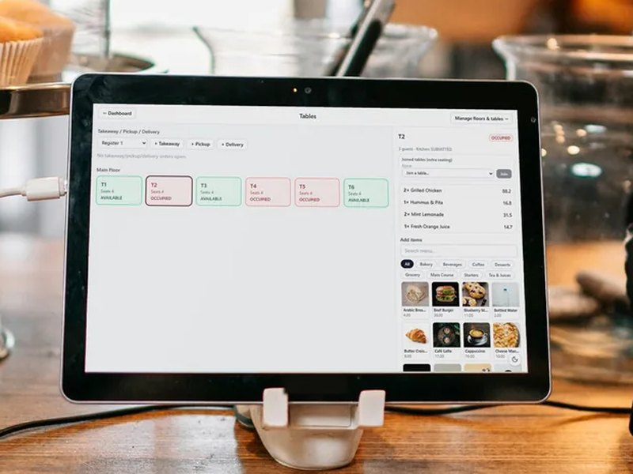
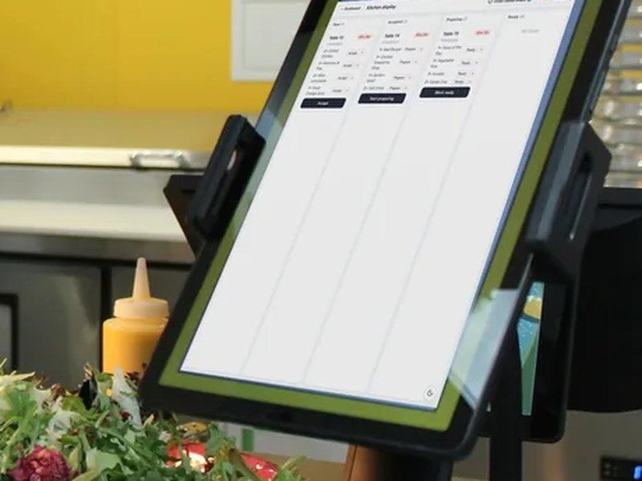
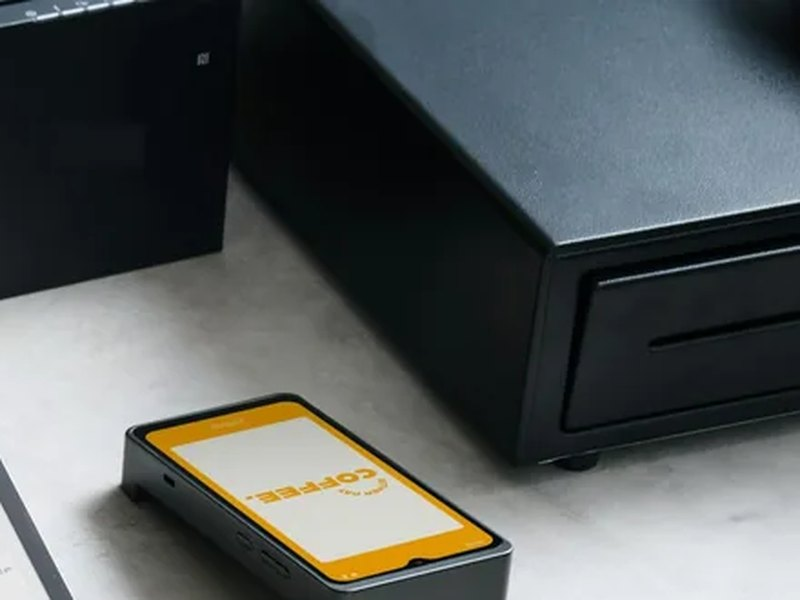
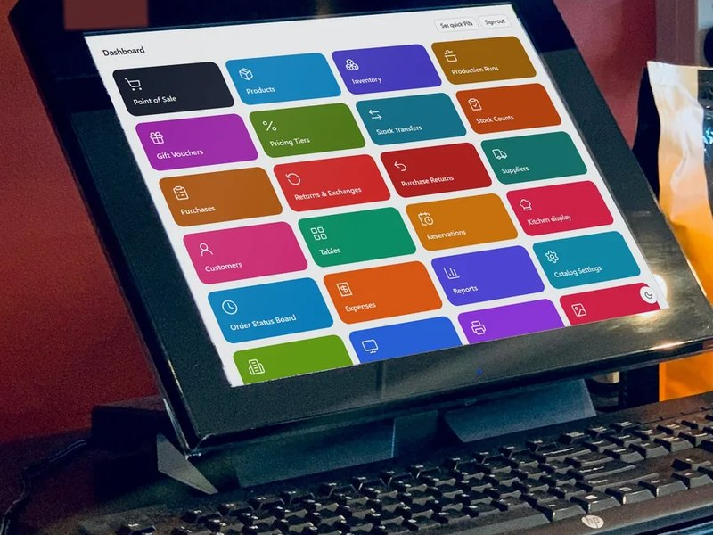

SELLO
نظام متكامل لنقاط البيع وإدارة المتاجر والمطاعم والمقاهي — يعمل على شبكة متجرك الخاصة، فلا تنتظر الفوترة الإنترنت أبدًا.
$
SELLO أثناء العمل
شاشات حقيقية من SELLO تعمل في مقهى ومتجر تجريبي، معروضة على أنواع مختلفة من أجهزة نقاط البيع. اضغط على أي شاشة لعرضها بالحجم الكامل.
 [ عرض الشاشة ]
[ عرض الشاشة ] [ عرض الشاشة ]
[ عرض الشاشة ] [ عرض الشاشة ]
[ عرض الشاشة ] [ عرض الشاشة ]
[ عرض الشاشة ] [ عرض الشاشة ]
[ عرض الشاشة ] [ عرض الشاشة ]
[ عرض الشاشة ]صور الأجهزة والمنتجات من Unsplash. الشاشات من متجر تجريبي ببيانات نموذجية.
نبيع أنظمة نقاط بيع متكاملة
الأجهزة والبرنامج من مورّد واحد. نوفّر أجهزة الكاشير، ونثبّت SELLO، ونُعدّ منتجاتك وضرائبك، وندرّب موظفيك — جاهز للبيع من اليوم الأول.






- أجهزة نقاط البيع
- برنامج SELLO
- التركيب والإعداد
- إعداد المنتجات والضريبة
- تدريب الموظفين
- الدعم وعقود الصيانة
لماذا SELLO
المشكلة
تستخدم المحلات والمطاعم أدوات منفصلة للفوترة والمخزون وطلبات المطبخ والحسابات — وتتوقف أنظمة الكاشير السحابية لحظة انقطاع الإنترنت.
الحل
يجمع SELLO الفوترة والمخزون والمشتريات وعمليات المطعم والتقارير في نظام واحد. يستضيف جهاز واحد في المتجر نظام SELLO، وتتصل به جميع نقاط البيع وشاشات المطبخ وأجهزة المكتب عبر الشبكة المحلية.
المزايا الرئيسية
- 01
فوترة التجزئة
بحث بالباركود، وبيع مجزّأ وبالآجل، وعروض أسعار، وإيصالات وفواتير.
- 02
وضع المطاعم والمقاهي
الصالات والطاولات والحجوزات والإضافات وشاشة المطبخ ومحطات التحضير وتقسيم الفاتورة.
- 03
المخزون والأصناف
منتجات بالصور والباركود، وفئات وعلامات تجارية ووحدات وضرائب وشرائح أسعار، ونقل وجرد المخزون.
- 04
المشتريات والموردون
المشتريات ومرتجعاتها ودفاتر حسابات الموردين.
- 05
العملاء والآجل
حسابات العملاء وتخصيص الدفعات للفواتير وكشوف الحساب وأعمار الديون.
- 06
الوصفات والإنتاج
مخزون قائم على الوصفات، وعمليات إنتاج، وتتبّع الهدر.
- 07
المالية والتقارير
المصروفات والضرائب والأرباح والمخزون والمبيعات — تصدير إلى PDF أو Excel أو CSV.
- 08
الصناديق ونقاط البيع
الصناديق والورديات وشاشة للعميل وقسائم الهدايا والمرتجعات والاستبدال.
- 09
الأمان والتحكم
أدوار وصلاحيات، وقفل برمز PIN، وسجل تدقيق، ودعم عدة أنشطة وفروع.
كيف يعمل
- الخطوة 1
ثبّت SELLO على جهاز واحد في المتجر بمثبّت ويندوز بنقرة واحدة.
- الخطوة 2
شغّل معالج الإعداد: أنشئ النشاط والفرع وحساب المالك، واختر وضع التجزئة أو المطاعم.
- الخطوة 3
اربط نقاط البيع وشاشات المطبخ وأجهزة المكتب بشبكة المتجر — يكفي فتح SELLO من المتصفح.
- الخطوة 4
بِع وتابع المخزون واستخرج التقارير، مع نسخ احتياطي واستعادة مدمجين لحماية البيانات.
لمن صُمّم
حالات الاستخدام
- السوبرماركت والبقالات ومتاجر التجزئة
- المطاعم والمقاهي والمطابخ السحابية
- المحلات متعددة نقاط البيع
- الأنشطة التي تدير أكثر من فرع أو علامة تجارية
الفوائد
- تستمر الفوترة عند انقطاع الإنترنت
- نظام واحد بدل أدوات منفصلة للفوترة والمخزون والمطبخ
- بياناتك تبقى على خادمك الخاص
- كل موظف يرى ما تسمح به صلاحياته فقط
التفاصيل التقنية
نظرة تقنية
خادم Node.js (NestJS) مع قاعدة بيانات PostgreSQL وتطبيق ويب React. يستضيف خادم واحد في المتجر الواجهة البرمجية وقاعدة البيانات والتطبيق، وتتصل باقي الأجهزة على الشبكة نفسها عبر المتصفح. يأتي بمثبّت ويندوز، ويعمل كخدمة ويندوز، ويتضمن وكيل طباعة لطابعات الإيصالات، مع نسخ احتياطي واستعادة وتشخيص للنظام.
البيانات والخصوصية
يعمل SELLO على أجهزتك الخاصة. تُحفظ بيانات النشاط والمبيعات والعملاء في قاعدة بيانات متجرك، وليس على سحابة طرف ثالث.
الأسئلة الشائعة
هل يحتاج SELLO إلى الإنترنت؟
لا. يعمل SELLO على شبكة متجرك المحلية، فتستمر الفوترة والمخزون والتقارير دون اتصال بالإنترنت.
هل يناسب المطاعم؟
نعم. يضيف وضع المطاعم والمقاهي الصالات والطاولات والحجوزات والإضافات وشاشة المطبخ وتقسيم الفاتورة.
ما الأجهزة التي يمكن استخدامها؟
أي جهاز على شبكة المتجر يحتوي على متصفح — حواسيب أو أجهزة لوحية أو شاشات لمس.
أين تُحفظ بياناتي؟
في قاعدة بيانات على خادم متجرك. ويتيح لك النسخ الاحتياطي والاستعادة المدمجان الاحتفاظ بنسخك الخاصة.
هل تبيعون أجهزة نقاط البيع؟
نعم. نوفّر أنظمة نقاط بيع متكاملة — أجهزة كاشير وأجهزة لوحية وطابعات إيصالات وأدراج نقود وشاشات مطبخ — مع تثبيت SELLO وإعداده ودعمه.
مهتم بـ SELLO؟
أخبرنا عن نشاطك التجاري — نردّ عليك خلال 24 ساعة.